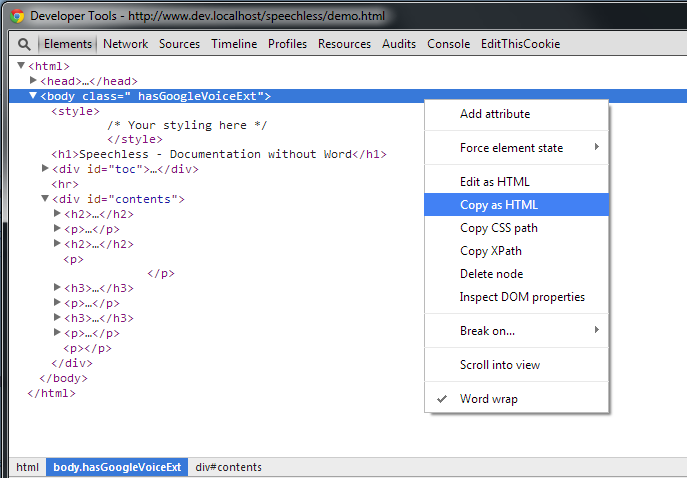

As a developer, I was exceptionally tired of using Word for documentation. It was always so heavy, both in file size as well as load time, and was such a pain to format content, indent, etc... without spending unnecessary mouse-time adjusting things. My primary use was to write large chunks of documentation that would need a table of contents that worked, and I really wanted a way for users to be able to load it up without having to download a copy of my doc, then open it up in Word. In addition, the ToC functionality of Word is beyond abysmal. So I wrote (and derived from others, particularly http://www.webtoolkit.info/) a tool that allows me to write clean HTML with exceptionally simple syntax that would produce content that I could post on our doc system, and would utilize the css of wherever it is dropped to fit right in, but still have all my content how I wanted it. In addition, I wanted to make sure that links to remote images didn't break the content, so I added in a derived work to automatically convert linked images into their base64 content versions locally. The end result is that you can write clean documentation, load it in a browser, then copy that HTML and paste anywhere to have all your content exactly as intended.
The auto-ToC tool simply watches h# tags, and nests them as it sees them. So simply write your content within 'p' or 'div' tags using 'h#' tags to divide things up, as you can see expressed within the code of this doc.
If you wish to serve up the content produced (ToC, images, etc...) elsewhere (Like a blog or doc management system)
simply load up your page in a browser locally, and browse the source of the page (I use Chrome's debug mode)
Copy/paste the HTML content within the body tags into whatever system you want. Your images will be converted from
remote links into their base64 versions, and you will have an operational ToC.
